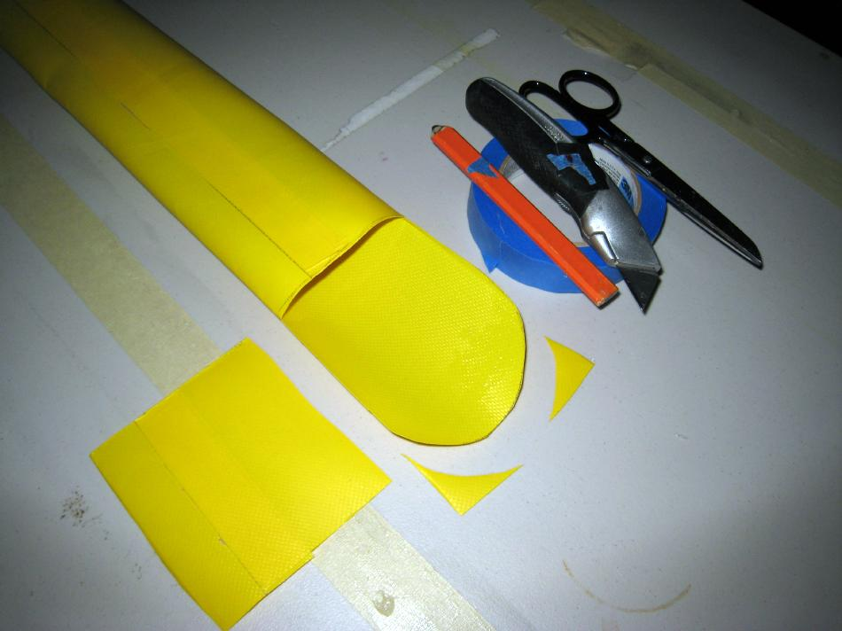

PVC Paddle Bags ( page 2 of 5)
Menu
Previous Page
Next Page

Cut off 4" of one side of the bag making sure that there is room for the paddle inside the bag. Mark and cut a round shape on the end of the flap.